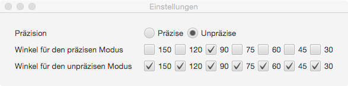

Einstellungen

Dieser Menüpunkt öffnet das Einstellungsfenster. Hier lassen sich die Winkel einstellen, für die Winkelhüllen gezeichnet werden sollen. Außerdem lässt sich die Präzision des Zeichnens der Hüllen einstellen. Der präzise Modus erzielt bessere Ergebnisse, ist aber deutlich langsamer. Die angezeigten Winkel lassen sich für beide Modi getrennt einstellen.